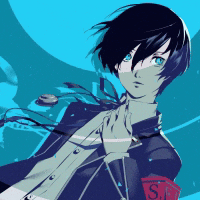

Technologies



I am a software developer that is based in Phoenix, AZ. The languages I work in are C#, HTML/CSS/JS, and Python. You can see my work on GitHub and Itch.io

Natsuki After Story
Natsuki After Story is a mod made for Doki Doki Literature Club(DDLC), this version is made for browsers so people can enjoy mods even without powerful hardware. We hope you enjoy!

Nova Matter 19
Nova Matter 19 follows a guy in the Nova Matter Tactical Unit (N.M.T.U), where he carries out missions assigned by his superiors until one day he changes and finds the N.M.T.U to be wrong. Soon after, he ends up in prison.